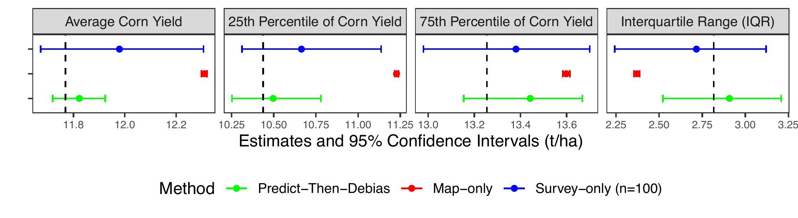
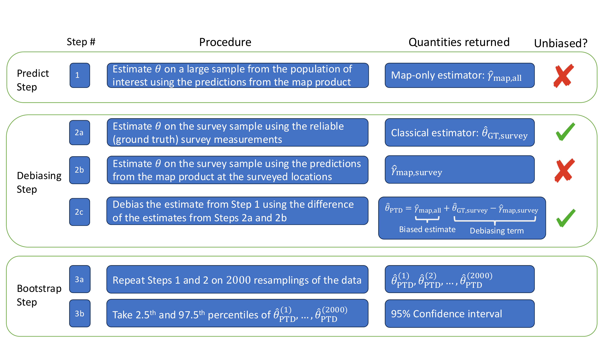
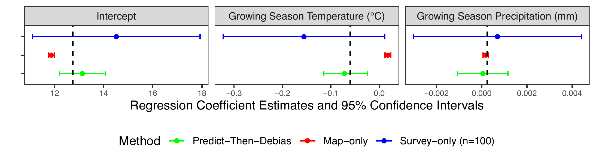

28 Prediction-Powered Inference (PPI) for Agricultural Decision-Making
In many agricultural applications, the goal is to characterize patterns that go beyond simple averages or total areas. Knowing the mean yield in a region is informative, but decision-makers may also be concerned with the distribution’s extremes — for instance, the 10th percentile, which represents vulnerable farmers, or the 90th percentile, which signals the most productive farms. Similarly, rather than only quantifying how much land is devoted to a given crop, we may want to understand the forces that drive those choices: the influence of government policies, the role of seasonal weather shocks, or the constraints imposed by water and labor availability. Answering such questions requires methodological approaches that extend beyond the ones introduced in the previous section [1]–[4].
Similar to the area or mean estimation cases, the main challenge when estimating more complex statistics is the imperfect nature of satellite-derived maps and the limited quantity of high-quality survey data. Ground surveys, while accurate, are expensive and sparse, often yielding estimates with wide uncertainty. Satellite products, on the other hand, provide broad coverage at low cost, but their predictions can be incorrect in ways that bias downstream analyses. If we rely solely on surveys, our estimates are statistically sound but imprecise; if we rely solely on maps, they are precise but potentially misleading.
Prediction-Powered Inference (PPI) is a class of methods that offer principled ways to overcome the limitations of Map-only and Survey-only approaches [5]. The idea is simple but powerful: combine the breadth of satellite-based predictions with the reliability of a small, randomly sampled set of ground-truth observations. First, PPI uses the map product to generate large-scale estimates of the quantity of interest — be it a mean, percentile, or regression coefficient. Then, the calibration sample of ground-truth data is used to measure the bias in those estimates and correct it. Finally, confidence intervals for the quantity of interest are constructed through bootstrap sampling. This Predict-Then-Debias strategy yields estimates that are both unbiased and accompanied by valid confidence intervals, even when the map errors are complex [6]. In effect, PPI retains the efficiency gains of using massive satellite datasets while safeguarding the statistical validity that comes from survey sampling. Empirical applications show that PPI prevents the misleading conclusions that arise from treating maps as error-free while achieving narrower confidence intervals than using ground-truth data alone — sometimes equivalent to having ten- or twenty-fold more survey data [7].
We next provide an accessible explanation of a PPI approach, focusing on a few examples. Links to software can be found at the end of this section.
28.1 Example: Yield estimation
Mean estimation
Suppose we are interested in estimating the average corn yield in a particular year and region and have access to both a corn yield map product and a small field survey of corn yields. We enumerate three approaches to estimating the average corn yield below; the first two are commonly used baselines that each have a substantial limitation, whereas the third is the Predict-Then-Debias approach (an algorithm within the PPI framework).
The Survey-only approach involves computing a sample average of the surveyed, ground truth (GT) corn yield data, which we will call \(\hat{\theta}_{\text{GT,survey}}\). Confidence intervals can be obtained using standard statistical procedures. This approach is reliable for estimating the average corn yield, but the confidence intervals can be wide if the survey has a small sample size. This approach ignores the satellite map product.
The Map-only approach involves computing an average of the estimated corn yield from the map product, which we will call \(\hat{\gamma}_{\text{map,all}}\). This approach can be unreliable because the errors in the map product can lead to a biased estimate of the average yield. On the bright side, confidence intervals will either have zero width (if every single pixel in the map is used) or will be very small (if one uses a random subset of the pixels). This approach does not use the survey data.
-
The Predict-Then-Debias (PTD) approach builds on the previous two approaches. The key additional step is to extract the corn yield estimates from the map product at each surveyed location and to take the sample average of these corn yield estimates. We let \(\hat{\gamma}_{\text{map,survey}}\) denote the average of the map product’s corn yield estimates, when averaging across only the surveyed locations. \(\hat{\gamma}_{\text{map,survey}}\) should have a similar bias as the Map-only estimate \(\hat{\gamma}_{\text{map,all}}\) and is calculated on the same sample as the Survey-only estimate \(\hat{\theta}_{\text{GT,survey}}\). These three estimates are then combined to produce the PTD estimator:
\[ \hat{\theta}_{\text{PTD}} = \underbrace{\hat{\gamma}_{\text{map,all}}}_{\text{Map-only estimate}} + \underbrace{(\hat{\theta}_{\text{GT,survey}}-\hat{\gamma}_{\text{map,survey}})}_{\text{Bias correction}} \tag{28.1}\]
\(\hat{\theta}_{\text{PTD}}\) is guaranteed to be unbiased, because any bias in \(\hat{\gamma}_{\text{map,all}}\) has been removed by a correction term. Since the variance of \(\hat{\gamma}_{\text{map,all}}\) is small and the variance of the bias correction term is typically small, the variance of \(\hat{\theta}_{\text{PTD}}\) is also usually small. (The more accurate the satellite map product, the smaller the variance of the correction term.)
In practice, confidence intervals can be calculated using the percentile bootstrap, which involves repeating the procedure of calculating \(\hat{\theta}_{\text{PTD}}\) on 2,000 different resamplings of the data. The 2.5th and 97.5th percentiles of these corn yield estimates across the 2,000 bootstrap resamplings will give a 95% confidence interval.
We illustrate these approaches on a sample of \(71{,}140\) pixels (of 30m \(\times\) 30m resolution) from the Eastern United States (east of the 100° W meridian) that correspond to fields growing corn in 2019. Estimates of corn yield were taken from the satellite-derived yield map developed in [8]. Because we did not have access to ground truth measurements of corn yield, we synthetically generated “ground truth" yields by adding a combination of noise and systematic error to the map product’s predictions1. We then selected a random sample of 100 pixels out of the \(71{,}140\) total pixels where the ground truth yields were to be measured as part of a survey. We withheld the ground truth yield on the remaining samples for validation purposes only.
Figure 28.1 (left panel) gives the estimates and 95% confidence intervals for the average corn yield in the Eastern U.S. using the three different approaches. The vertical dashed line corresponds to the true average yield. The Survey-only approach, which involves averaging yield across the 100 surveyed locations, has wide confidence intervals that contain the true average yield. Meanwhile, the Map-only approach, which involves averaging the map product’s estimated yields across all \(71{,}140\) pixels, has a narrow confidence interval but is an overestimate. The Predict-Then-Debias approach, using both the survey and map product, results in narrower confidence intervals than those from the Survey-only approach. Crucially, unlike the Map-only confidence interval, the PTD confidence interval contains the actual average corn yield, calculated from the withheld ground truth data.
Approaches for estimating the average of a quantity that use a combination of a map product and a surveyed sample are well established in the remote sensing literature [4]. An advantage of the Predict-Then-Debias approach is that, as we will see next, the method generalizes readily to settings where the goal is to estimate some quantity other than an average. As examples, using the same corn yield dataset from the Eastern U.S., Figure 28.1 shows results from the Predict-Then-Debias approach when estimating the 25th and 75th percentiles of corn yield as well as the difference of these percentiles (the interquartile range).
Estimating other summary statistics
The Predict-Then-Debias approach readily generalizes beyond tasks of estimating averages. If the goal is to estimate some quantity of interest other than an average, one can follow the same steps as before, except the quantities \(\hat{\theta}_{\text{GT,survey}}\), \(\hat{\gamma}_{\text{map,all}}\), and \(\hat{\gamma}_{\text{map,survey}}\) will no longer be sample means and will instead be estimates of the quantity of interest.
For example, if one wishes to estimate the 25th percentile of corn yield, the Survey-only estimate \(\hat{\theta}_{\text{GT,survey}}\) will be the 25th percentile of measurements from the surveyed sample. The Map-only estimate \(\hat{\gamma}_{\text{map,all}}\) will be the 25th percentile of the map product predictions across the study region. \(\hat{\gamma}_{\text{map,survey}}\) will be the 25th percentile of the map product’s corn yield estimates across the surveyed locations. Finally, \(\hat{\theta}_{\text{PTD}}\) will be calculated using Equation 28.1.
More generally, Figure 28.2 gives an overview of the Predict-Then-Debias procedure when one wants to estimate some quantity of interest \(\theta\) using a combination of map-product data and ground truth data from a small survey. For more details about the method, see [6].

Estimating associative relationships
In many cases, one wishes to investigate how the mapped quantity is associated with a policy, a farm management practice, or an environmental factor (e.g., weather). In such cases, the Predict-Then-Debias approach can still be applied, whether the goal is to estimate a regression coefficient, a correlation coefficient, or some other quantity describing the relationship between multiple variables. One would follow the steps in Figure 28.2, with the difference being that more than one variable is used in each step to calculate the quantity of interest.
We return to the corn yield dataset. Suppose we wish to estimate the best fit regression coefficient in the linear model:
\[ Y_{\text{corn}}=\theta_0+\theta_1 X_{\text{temp}} +\theta_2 X_{\text{precip}} + \varepsilon. \] In the above linear model, the dependent variable \(Y_{\text{corn}}\) is the corn yield, which in our dataset is estimated by a map product across the study region but surveyed at only 100 locations. Independent variables \(X_{\text{temp}}\) and \(X_{\text{precip}}\) are average growing season temperature and precipitation, respectively; we assume the true values of these are known at all locations in the study region. Coefficient \(\theta_1\) is therefore the association between average growing season temperature and corn yield, coefficient \(\theta_2\) the association between average growing season precipitation and corn yield, and \(\theta_0\) the intercept.
Figure 28.3 gives estimates of the regression coefficients and 95% confidence intervals for \(\theta_0\), \(\theta_1\), and \(\theta_2\) when using the Survey-only, Map-only and Predict-Then-Debias approaches. We again observe the wide confidence intervals of the Survey-only approach, the (often but not always) biased Map-only estimator, and the PTD estimator combining the strengths of map and survey. See [7] for more examples as well as details on how to apply PTD to estimate regression coefficients using remote sensing map products.

28.2 Takeaways and technical notes
Characteristic results
Even though the experiments involved synthetically generated corn yield data and a real data product, the findings in Figure 28.1, Figure 28.3 are characteristic of patterns seen throughout the PPI literature [5]–[7], [9]. In particular, in most experiments on real datasets, the Map-only approach (referred to as the naïve approach in the PPI literature) exhibits narrow confidence intervals that do not contain the actual quantity of interest while the Survey-only approach (referred to as the classical approach in the PPI literature) typically has wider confidence intervals that contain the actual quantity of interest. Meanwhile, Prediction-Powered approaches, such as the Predict-Then-Debias approach, are typically found to have narrower confidence intervals than the Survey-only approach but still contain the actual quantity of interest.
Method flexibility
In contrast to methods in the remote sensing literature which are only designed for area estimation [1]–[3], [10] or are only designed for mean estimation [4]), the Predict-Then-Debias [6] approach can be used to estimate a broad class of possible quantities of interest, including but not limited to areas, means, quantiles and regression coefficients. The Predict-Then-Debias approach also offers flexibility advantages over earlier methods in the Prediction-Powered inference literature [5], [9]. For example, these earlier approaches are not designed for the “Error-in-X” and “Error-in-both” regression settings studied in [7].
Tuning to increase power
In practice it is recommended to set the Predict-Then-Debias estimator to be:
\(\hat{\theta}_{\text{PTD}}=\omega \hat{\gamma}_{\text{map,all}}+(\hat{\theta}_{\text{GT,calib}}-\omega \hat{\gamma}_{\text{map,calib}})\)
where \(\omega\) is a scalar tuning parameter that is automatically chosen to minimize the variance of \(\hat{\theta}_{\text{PTD}}\). This will lead to guarantees that the confidence intervals from the Predict-Then-Debias approach will be narrower than those from the Survey-only approach. Explicit discussion of selecting the tuning parameter \(\omega\) is omitted for brevity, although we note that the experiments in Figure 28.1, Figure 28.3 used such a tuning parameter. For more details on selecting the tuning parameter \(\omega\), see [7] and [6].
Statistical guarantees
The Predict-Then-Debias approach has theoretical guarantees of returning valid confidence intervals (meaning that under random sampling, the probability that the confidence interval contains the actual quantity of interest approximately matches the claimed probability). Notably, these statistical guarantees hold regardless of the quality of the map-product and regardless of whether the map-product errors are correlated with other variables in the analysis. The statistical guarantees also do not require any parametric modelling assumptions on the map-product error to hold. For more details on the theoretical guarantees, see [6].
Survey requirements
In order for the PTD approach to have statistical guarantees, the survey sample must be a random sample from the population of interest. Also, the survey should be conducted so that each location has a nonzero probability of being included in the survey. Such requirements parellel recommended practices in survey sampling for remote sensing applications (e.g, [3]). It should be noted that the survey sample does not need to be a uniformly weighted random sample. For example, the survey could involve a weighted, stratified, or clustered (e.g., spatially clustered) random sample. In such cases, PTD bootstrap modifications, such as those presented in [6] and implemented in the corresponding R package, would be needed for the confidence interval.
Multiple mapped variables
As demonstrated in [7], the PTD approach can be applied in settings where the investigator wants to fit a regression involving more than one mapped variable of interest. To do so, some of the samples from the survey should have ground truth measurements for all variables of interest.
Software
A Python module implementing the PTD approach can be found at Earth-Intelligence-Lab/ppi_regression. An R package implementing the PTD approach can be found at DanKluger/PTDBoot. Both packages have corresponding notebooks with worked examples. Code used for the corn yield examples can be found at PTDBootTutorial/CornYieldExamples.html.
References
[1]
D. Card, “Using known map category marginal frequencies to improve estimates of thematic map accuracy,” Photogrammetric Engineering and Remote Sensing, vol. 48, no. 3, pp. 431–439, 1982.
[2]
P. Olofsson, G. M. Foody, S. V. Stehman, and C. E. Woodcock, “Making better use of accuracy data in land change studies: Estimating accuracy and area and quantifying uncertainty using stratified estimation,” Remote Sensing of Environment, vol. 129, pp. 122–131, 2013.
[3]
P. Olofsson, G. M. Foody, M. Herold, S. V. Stehman, C. E. Woodcock, and M. A. Wulder, “Good practices for estimating area and assessing accuracy of land change,” Remote Sensing of Environment, vol. 148, pp. 42–57, 2014, doi: https://doi.org/10.1016/j.rse.2014.02.015.
[4]
R. E. McRoberts et al., “On the model-assisted regression estimators using remotely sensed auxiliary data,” Remote Sensing of Environment, vol. 281, p. 113168, 2022, doi: https://doi.org/10.1016/j.rse.2022.113168.
[5]
A. N. Angelopoulos, S. Bates, C. Fannjiang, M. I. Jordan, and T. Zrnic, “Prediction-powered inference,” Science, vol. 382, no. 6671, pp. 669–674, 2023, doi: 10.1126/science.adi6000.
[6]
D. M. Kluger, K. Lu, T. Zrnic, S. Wang, and S. Bates, “Prediction-powered inference with imputed covariates and nonuniform sampling,” arXiv:2501.18577 [stat.ME]., 2025.
[7]
K. Lu, D. M. Kluger, S. Bates, and S. Wang, “Regression coefficient estimation from remote sensing maps,” Remote Sensing of Environment, vol. 330, p. 114949, 2025, doi: https://doi.org/10.1016/j.rse.2025.114949.
[8]
Y. Ma, S.-Z. Liang, D. B. Myers, A. Swatantran, and D. B. Lobell, “Subfield-level crop yield mapping without ground truth data: A scale transfer framework,” Remote Sensing of Environment, vol. 315, p. 114427, 2024, doi: https://doi.org/10.1016/j.rse.2024.114427.
[9]
A. N. Angelopoulos, J. C. Duchi, and T. Zrnic, “PPI++: Efficient prediction-powered inference,” arXiv preprint arXiv:2311.01453, 2023.
[10]
S. V. Stehman, “Estimating area from an accuracy assessment error matrix,” Remote Sensing of Environment, vol. 132, pp. 202–211, 2013, doi: https://doi.org/10.1016/j.rse.2013.01.016.
Scientific conclusions should not be drawn from this synthetically generated yield data; we use them here to illustrate the differences between the Survey-only, Map-only, and Predict-Then-Debias approaches.↩︎